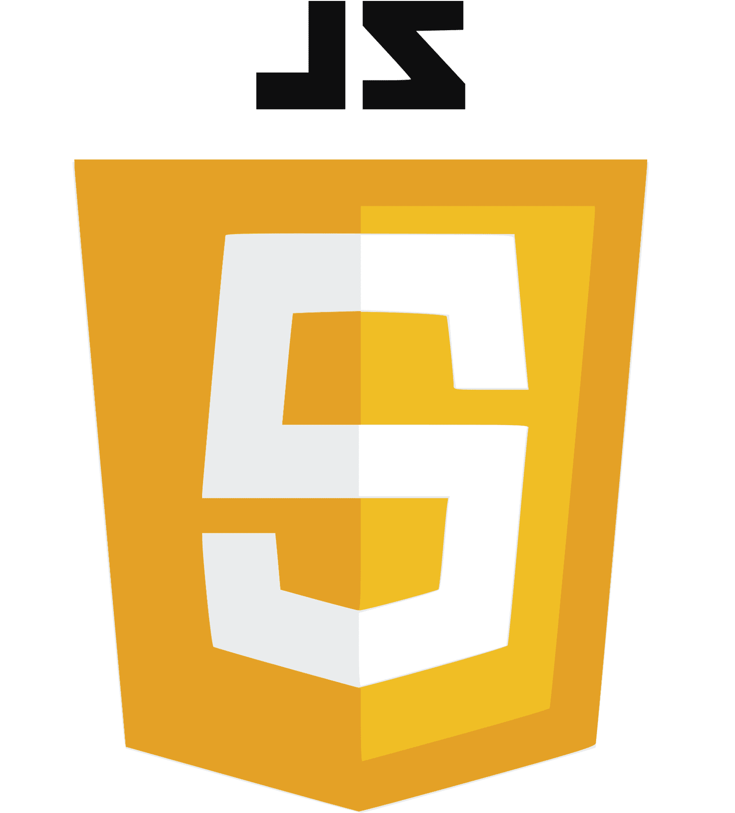
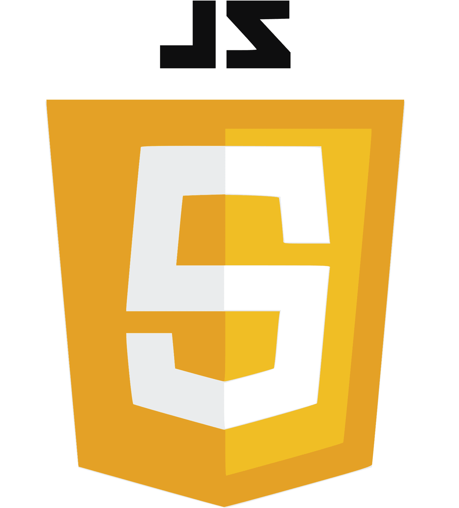
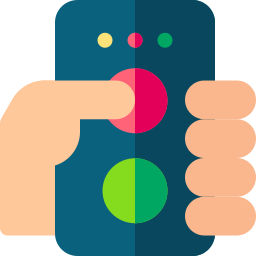
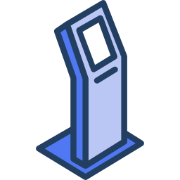

-

CONTACT
phone. 01045276649
email. js06m12@naver.com -
ABOUT ME
안녕하세요. 개발자 주소민입니다.
저는 컴퓨터sw학과를 졸업하고, 현재 Web BackEnd 개발자가 되기 위해 KH정보교육원의 개발자 과정을 수료하고 있습니다.
저는 학교생활 중 여러활동(공부, 코드리뷰, 회의, 프로젝트)등을 통해 성장해왔으며, 활동 중 팀원들을 이끌고 소통하며 개발자 역량을 키워왔습니다.
그리고 현재, 부족한 점을 채우기 위해 kh정보교육원에서 수업을 열심히 들으며 실력을 성장시키는 중입니다.
저는 프로젝트를 하면서 항상 소통이 중요하다 생각해 왔습니다.
저의 이러한 경험을 바탕으로 팀원들과 원활히 소통하는 개발자가 되도록 노력하겠습니다.
MAIN SKILL
SUB SKILL
 


PROJECT
-
유치원 버스 모션감지 시스템
2018년도에 진행한 프로젝트로, 그 당시 유치원 버스에서 아이가 내리지 못하고 폭염 속에 차안에 방치된 사건을 보고 착안한 프로젝트이다.
당시, 연구실에 있던 동기들과 공부하던 라즈베리 파이를 이용하여 프로젝트를 진행했다.
모션 감지 센서, 무게 센서, 카메라를 이용하여 운전자가 차량에서 내리고 나서, 차량안에서 모션이 감지될 시 저장된 운전자 번호로 차량의 cctv를 확인할 수 있는 링크를 문자로 보내주는 프로젝트이다.
사용 언어 : Python, HTML, CSS 사용 기술 : RASPBERRY Pi, 모션감지, 무게 센서 -

투표 시스템
2020년도에 인턴 생활중 회사에서 진행한 프로젝트로, 리모컨 투표 관련 행사를 진행하던 회사에서 투표 관련 소프트웨어를 만든 프로젝트이다.
인턴 동기들과 진행한 프로젝트로, 투표 안건에 대해 투표를 받고, 투표 리모컨에서 신호를 받아 투표수를 집계하고, 결과를 그래프로 보여준 뒤 엑셀로 저장하는 소프트웨어를 제작했다.
사용 언어 : C# 사용 기술 : 투표 리모컨, RF 허브(집계용) -

식당 자리확인 어플
2020년도에 학과 동기들과 졸업프로젝트로 진행한 프로젝트로, 식당에 남은 자리를 확인할 수 있는 어플리케이션을 제작한 프로젝트이다.
식당 사장님과 일반 사용자로 나뉘며, 결제 프로그램(포스기)는 식당 사장님이 자리, 메뉴 등 입력하고 사용할 수 있도록 했고, 대기자 명단을 보고 호출이 가능하도록 만들었다.
일반 사용자는 원하는 가게를 찾고, 자리 현황을 알 수 있다. 또한, 자리가 없을 경우 명수를 선택하여 테이블에 대기를 신청할 수 있도록했다.
사용 언어 : Java, PHP, MySql 사용 기술 : Android, DataBase, Github, Hosting Server -

KIOSK
2021년도에 KH정보교육원에서 진행한 미니 프로젝트로, 학생식당용 KIOSK를 제작하였다.
식당 관리자와 일반 사용자로 나뉘며, 관리자는 메뉴를 입력하고 파일로 저장된 메뉴를 불러올 수 있으며 정산 시 메뉴별 합계, 팔린 수량을 알 수 있으며 정산 기능을 제공한다.
일반 사용자는 결제를 할 수 있으며, 메뉴 당 최대 5개까지 구매 가능하다, 또한 화면을 선택하고 동작이 없으면 일정시간 이후 초기화된다.
사용 언어 : Java